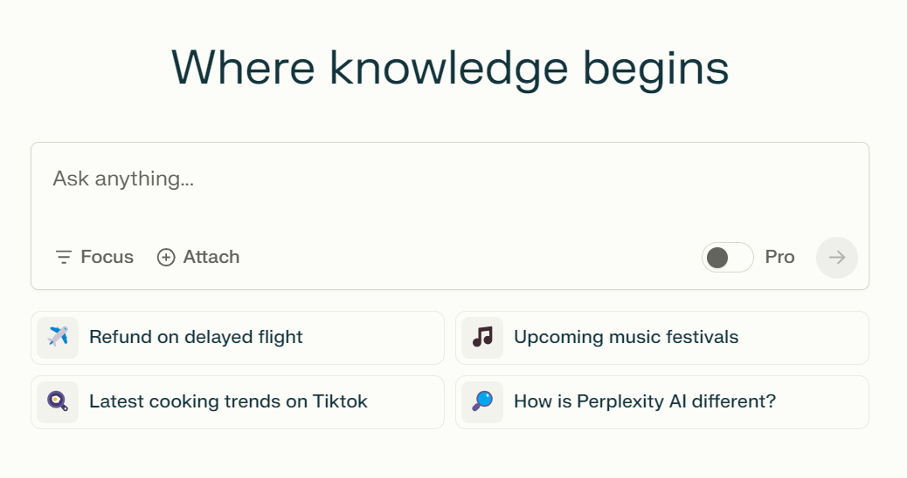

ChatGPT

ChatGPT är den vanligaste och mest välkända
tjänsten som finns ute. ChatGPT är en textbaserad AI-bot som kan besvara i stort sett alla förfrågningar
som anges. Efter att du har skrivit in din förfrågan kommer sedan ChatGPT söka efter information på nätet
som behövs för att besvara din förfrågan.
ChatGPT är generellt sett inte särskilt bra på att hänvisa till källor eller att värdera källor. Trots detta är ChatGPT ett väldigt
bra verktyg och är väldigt bra på att anpassa din text utifrån situationen. Tänk på att texten kanske inte blir perfekt efter första försöket,
kom ihåg att ChatGPT alltid kommer ge dig EXAKT det du ber den om. Tänk på att ditt ordval spelar en avgörande roll
för vad ChatGPT svarar och att du behöver specifiera det du vill ha. Du kan självklart fortsätta skriva i samma konversation
för att spara dina chattar och för att förbättra din text genom att be ChatGPT göra ändringar. ChatGPT är gratis men du kommer behöva ett konto
för att använda det, via kontot kan du sedan komma åt gamla chattar.
Intellecs.ai
Intellecs.ai är en annan textbaserad AI-tjänst. Denna hemsida är relativt lik ChatGPT
eftersom även denna kan använda information från internet för att besvara dina förfrågningar. En avsevärd skillnad däremot är möjligheten att bifoga en PDF-fil. Fördelen med detta är att
svaret endast är baserat på den information som finns i din bifogade fil. Därmed kommer det inte finnas med information från okända eller potentiellt
opålitliga källor.
Även fast detta är begränsande, lämnar det utrymme åt dig att hitta dina egna källor eller studier på internet och att själv få avgöra
om källan i fråga är lämplig att använda. När du har ställt en fråga om innehållet, kommer hemsidan även hänvisa till den del som den hämtade informationen.
En nackdel med denna tjänst är att antalet förfrågningar per dag är begränsade till 10 st per dag med gratisversionen. Hemsidan
går att använda gratis genom att registrera ett konto med din mailadress.

Sist men inte minst kan du skriva texter med hjälp av hemsidan. Det du gör är att du börjar skriva din text eller uppsats som vanligt
och sedan markerar vissa meningar för att sedan göra ändringar. Du kan till exempel låta AI rätta till grammatiska fel, göra meningen längre eller mer formell. Annars kan du skriva in
en valfri förfrågan. Det mest användbara sättet att använda detta är att be den att omformulera en mening på ett önskat sätt. På så sätt kan du få en bättre
språkförståelse och även lära dig hur du formulerar dig på andra sätt, vilket sedan kommer att hjälpa dig att bli mer flexibel i ditt skrivande.
perplexity.ai

perplexity.ai är en hemsida som per automatik länkar till de källor som dess AI har använt i sitt svar.
Bortsett från detta fungerar hemsidan mer eller mindre på samma sätt som ChatGPT. En nackdel däremot är att källorna nödvändigtvis inte behöver vara relevanta för din text.
Därför är det viktigt att kolla upp källorna och värdera deras trovärdighet. Genom att använda detta verktyg har du lättare att hitta källor som kan vara användbara i ditt specifika fall.
Att tänka på!
Nu har du läst om ett antal användbara AI-baserade tjänster och lärt dig om deras användningsområden.
Som tidigare nämnt är det viktigt att veta vad du vill ha för typ av text för att få ut bästa möjliga resultat. Detta gäller för alla textbaserade verktyg som använder AI.
Därför kommer nu några exempel på saker att tänka på när du använder AI för att den ska förstå vad du vill ha:
- Ange typ av text (ifall det är en text)
- Berätta i detalj vad som ska vara med
- Förklara med ett passande ordval
- Använd nyckelord